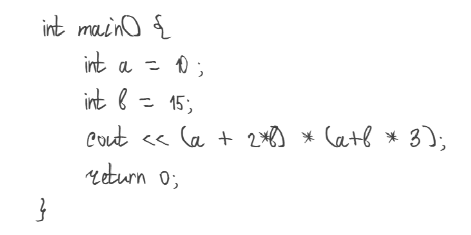
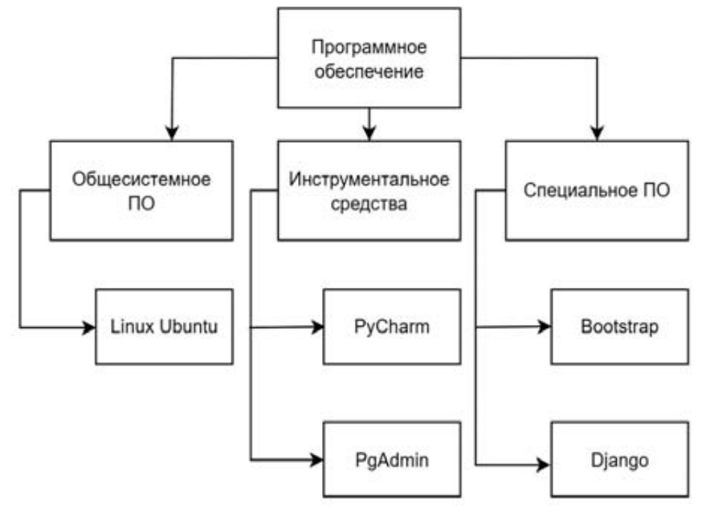

Авторы: С.А. Махалин, А.Н. Полетайкин, Т.И. Монастырская
Учебное заведение: Кубанский государственный университет
Ключевые слова: помощник преподавателя, обучение, искусственный интеллект, линтеры, машинное обучение, нейронные сети
Искусственный интеллект (ИИ) всё глубже проникает в разнообразные сферы человеческой жизнедеятельности, и образование не является исключением. Появление таких разработок в последние годы привело к диверсификации образовательных технологий и даже появлению специальной предметной области, обозначаемой в английском языке как AIED (Artifi cial Intelligence in Education) – искусственный интеллект в образовании. Ключевой особенностью ИИ становится способность имитировать отдельные комплексные действия, присущие человеку в его деятельности: принятие решений, построение логических умозаключений, а также прогнозирование. Это позволяет искусственному интеллекту осуществлять персонализированное руководство и поддержку, а также обеспечивать студентам обратную связь [1], что в свою очередь способствует трансформации самого процесса познания, снижая в определённой степени трудозатраты для всех участников образовательного процесса.
Несмотря на то что указанный тренд можно считать инновационным для образовательной системы, практическая его реализация, а значит и переосмысление с научной точки зрения, проводится уже на протяжении десятилетий. Ещё в 1991 г. Б.П. Вулф из Массачусетского университета выпустил брошюру «ИИ в образовании» [2]; при этом, судя по тексту, ранние разработки в данной отрасли относятся ещё к 1970-м гг. Однако с эволюцией технологий расширяются и возможности применения ИИ, следовательно, есть смысл обратиться к более современным публикациям для оценки состояния дел.
В обзорной статье Чэня Лицзя, Чэня Пинпина и Линя Чжицзяня выявляются наиболее общие тенденции, связанные с внедрением ИИ в образовательную среду [3]. Среди конкретных подобластей авторы выделяют использование соответствующих технологий в управлении учебным процессом и непосредственно в обучении. Наиболее конкретные проявления включают в себя сетевые образовательные системы, человекоподобных роботов и виртуальных собеседников, дополняющих (а иногда и заменяющих) преподавателя. Помимо повышения качества учебного процесса, ИИ помогает учителям собирать и обрабатывать массивы данных, автоматизировать проверку домашних заданий, тем самым экономя время на другие виды профессиональной деятельности. В свою очередь разнообразие методик обучения и интерактивность положительно сказываются на интересе со стороны самих обучающихся. Среди других позитивных особенностей, сопровождающих инкорпорирование ИИ в образование, называются развитие способностей студентов к саморефлексии, разрешению противоречий, а также умение задавать нестандартные вопросы и делать выбор в непростых ситуациях [4].
В целом обращает на себя внимание передовой китайский опыт в применении искусственного интеллекта в просвещении. С одной стороны, с административной точки зрения можно проследить унифицированную стратегию государства, нацеленную на модернизацию системы образования (в том числе и за счёт использования ИКТ). В то же время в реалиях смешанной экономики КНР процветают частные компании, нацеленные на предоставление образовательных услуг, и для обеспечения конкурентоспособности некоторые из них прибегают к достижениям ИИ [5]. С концептуальной точки зрения китайские учёные выделяют три парадигмы в рассматриваемом предметном поле [6]. В первой из них («ИИ как направляющая») обучающийся является реципиентом в учебном процессе. Вторая («ИИ как средство поддержки») предполагает роль обучающегося как соучастника процесса. Наконец в третьей парадигме («ИИ как источник мотивации») обучающийся становится лидером.
Ролл И. и Вайли Р. рассматривают эволюционные и революционные процессы в изучаемой сфере [7]. Отмечается, что одной из основных задач в ней является создание систем, где машина может обучать человека столь же эффективно, как и один человек другого. По мнению исследователей, прогресс, достигнутый за десятилетия работы в направлении этой цели, позволил в первую очередь ускорить учебный процесс. Стоит отметить, что сама статья напечатана в издании «International Journal of Artifi cial Intelligence in Education» (досл. «Международный журнал искусственного интеллекта в образовании»), что и позволяет говорить о создании отдельной соответствующей субдисциплины (см. выше). Это же утверждение иллюстрирует своим наличием и другой пример периодического издания под названием «Компьютеры и образование: искусственный интеллект» [1].
Турецкие эксперты из Анатолийского университета обращают внимание на смежные направления, связанные с ИИ, и их вспомогательную роль в образовательной деятельности [8]. К таким компонентам, в частности, относятся машинное обучение, глубокое обучение, обработка естественных языков и т. п. На основе анализа больших объёмов данных, содержащихся в соцсетях, авторы выявили сквозные тенденции, относящиеся к интересующей нас тематике, разделив их на три основные группы: адаптивное обучение и персонализация; экспертные и интеллектуальные системы обучения; ИИ в целом как будущий компонент образовательного процесса.
Из актуальных вопросов учёные из Гонконга и Тайваня [9] выделяют наличие определённого разрыва между теорией и практикой, в результате чего применение ИИ в образовании ограничивается лишь определёнными направлениями (к примеру, широко распространена обработка естественных языков, но недостаточно активно внедряются возможности глубокого обучения, включая нейронные сети). С точки зрения авторов, необходимо обращать особое внимание на использование искусственного интеллекта в условиях очных — а не виртуальных — занятий, углубляя персонализированный подход к обучающимся. Ещё одним интересным предложением является комбинирование биомедицинских технологий (к примеру, ЭЭГ) с процессом обучения, что помогло бы оперативнее обнаруживать и прорабатывать проблемные моменты в учебном материале.
Международный коллектив авторов [10] выделяет и ещё одну сопряжённую подтему: применение ИИ в контексте науки о больших объёмах данных (Big Data). В частности, обработка крупных массивов информации с помощью вычислительных технологий помогает не только определить самые общие тенденции, но и индивидуализировать траектории обучения.
Впрочем, доминирование технологий в образовательной сфере иногда ведёт и к пессимистическим прогнозам. В качестве примера можно привести статью «Разрушит ли ИИ образование?» [11], в которой проф. М.Й. Варди критически рассматривает феномен МООК (массивных открытых онлайн-курсов) как предтечу использования ИИ в образовании. По мнению автора, данная тенденция представляет собой своеобразный ответ на вопрос, который так и не был задан, т. е. необходимости во внедрении искусственного интеллекта в искомую сферу нет в принципе, в особенности с учётом ряда нерешённых проблем вроде этического аспекта, связанного с работой ИИ.
Таким образом, можно сделать вывод, что, несмотря на достигнутые успехи, проникновение искусственного интеллекта в сферу образования представляется лишь фрагментарным и предстоит предпринять ещё немало усилий для полноценного применения всего спектра возможностей, которые он предоставляет. Будущие перспективные исследования могут быть связаны с междисциплинарными факторами, узким профессиональным (прецизионным) обучением, диалогом между апологетами «холодной» технологии и сторонниками «тёплых», гуманитарных аспектов образования [10].
Современные технологии существенно облегчают работу людей во всех сферах. Это касается и сферы образования. Для преподавателя важно обучить студентов необходимым навыкам, особенно если это касается университетов, которые дают студентам профессиональные навыки. Например, важно не только правильно писать программы, но и соблюдать определённые правила «хорошего стиля» в них.
Однако существует проблема, которая касается любого преподавателя: обучающихся очень много, что требует значительных временных затрат преподавателем на проверку письменных работ вручную. А здесь простые человеческие факторы могут повлиять на объективную оценку качества написанного кода.
Итак, в этом случае существует наиболее простой выход: выполнять проверку письменных работ при минимальном участии преподавателя. Лишь благодаря отсканированным копиям работ можно провести полную оценку и дать конструктивное мнение по поводу работоспособности программы, а также стиля её написания. Для этого предлагается реализовать вебсайт, на котором будут осуществляться все операции, связанные с загрузкой, распознаванием, проверкой работ. Помимо этого, учащийся будет иметь возможность просмотреть замечания и итоговую оценку по своей работе.
Схожие задачи не новы и остро стоят в поле зрения интересов всех образовательных учреждений. И есть множества сервисов, помогающих преподавателям выполнять свою работу лучше и проще. Рассмотрим два из них.
Первый сервис называется Wooclap [12]. Его основная идея в том, чтобы делать уроки более интерактивными, постоянно активируя внимания обучающегося с целью лучшего усвоения получаемых знаний. При помощи искусственного интеллекта можно создавать интерактивные уроки, которые включают в себя голосования, вопросы-ответы, опросы и другие способные к интеграции в урок элементы обучения.
Оценка знаний обучающихся становится более тривиальной задачей, ведь постоянные опросы и небольшие проверки всегда позволяют оценить реальный уровень знаний школьников в конкретный момент – благодаря этому задача планирования обучения становится проще. Wooclap позволяет студентам задавать вопросы и выражать свое мнение в режиме реального времени. Это способствует более активному участию и обеспечивает мгновенную обратную связь от обучающихся. Сервис также имеет собственные внутренние инструменты для анализа прогресса школьника в усвоении полученных знаний.
Wooclap имеет множество встроенных интеграций, позволяющих проводить урок разными способами, улучшая качество подаваемого учебного материала. Например, такими внутренними интеграциями является возможность поддержки PowerPoint или Google Slides. Преподаватели могут добавлять интерактивные элементы в свои презентации, чтобы сделать уроки более увлекательными. Сервис достаточно масштабируем и адаптивен, так как является веб-сервисом, который также имеет мобильное приложение, позволяющее обучающимся использовать сервис даже на мобильных устройствах, что сильно спасает ситуацию, когда происходят непредвиденные ситуации у преподавателя или обучающегося. Подводя итог, можно заключить, что Wooclap является весьма удобным и гибким инструментом для проведения уроков у школьников или студентов с целью лучшего усвоения знаний, анализа качества обучаемости и планирования расписания уроков и занятий. Второй сервис называется Grammarly [13]. Это очень популярный онлайн-сервис, предназначенный для проверки и коррекции грамматических ошибок, структуры предложений, правописания и стиля в текстах. Этот инструмент использует искусственный интеллект и алгоритмы машинного обучения для анализа текстов и предоставляет рекомендации по их улучшению. Он позволяет автоматически выявлять грамматические ошибки и опечатки в тексте, предоставляет предложения с исправлениями и объяснениями для каждой ошибки, помогая пользователям улучшить качество своих текстов. Сервис также анализирует структуру предложений и стиль написания, предлагая рекомендации по улучшению читаемости и языковой точности.
Grammarly рекомендует синонимы и альтернативные варианты слов, чтобы обогатить лексику текста. Помимо этого, он проверяет правильность использования знаков препинания, что способствует лучшей структурированности текста. Также сервис может анализировать текст на уникальность и предостерегать пользователя от плагиата, предлагая альтернативные формулировки. Grammarly имеет внутренние возможности к интеграции со множеством платформ. Он предоставляет браузерные расширения и плагины для текстовых редакторов, электронной почты и социальных сетей, что позволяет пользователям проверять тексты на грамматические ошибки и структуру прямо в контексте их использования. Имеет доступность в виде приложений для Windows и macOS, что обеспечивает возможность проверки текстов вне веб-браузера. Grammarly широко используется в образовании, в профессиональных и деловых сферах, а также всеми, кто стремится улучшить качество своих письменных текстов и документов, обеспечивая лучшую читаемость, структуру и точность. Подводя итог, становится очевидным, что онлайнсервис Grammarly является удобным средством для проверки орфографии и в целом лингвистических знаний обучающихся, с возможностями углублённой проверки, подробным описанием ошибок и предоставлением потенциальных вариантов исправления.
Подходя к основной теме выступления, нужно определить, почему так важно проверять не только работоспособность программного кода обучающихся, но также их стиль и синтаксическую корректность. Во многих компаниях-разработчиках ПО часто используют линтеры для одобрения merge request’ов. Линтеры – это программы, выявляющие стилистические ошибки в коде, которых программист должен избегать. Код должен не только работать правильно, но и быть читаемым для будущих изменений и доработок. Например, можно рассмотреть способ реализации pipeline с использованием линтеров. В [14] представлена реализация такого pipeline для внедрения в любительский проект, который будет выполнять определенные шаги при каждом push на github-сервере. При выполнении этих шагов pipeline уведомит пользователя о корректности синтаксиса и стиля кода, а также успешном прохождении unit-тестов, если они есть в проекте. В этой работе используется внешний линтер cpp-linter для проверки стиля написания кода. Это пример того, как линтеры используются в промышленном программировании крупных IT компаний. Когда речь идет о стиле программного кода, важно понимать, что опыт в этой области не заканчивается на учебных задачах. В компаниях большое количество времени уделяется изучению чужого кода. Если код написан сложно и без аннотаций, это может замедлить бизнес. Поэтому навык написания чистого и читаемого кода крайне важен для студентов и школьников, которые хотят стать программистами в будущем. Рассмотрим на примере вредные привычки учащихся при написании программ.
Одна из наиболее распространенных плохих привычек учащихся – использование некорректных названий переменных. Это делает код менее читаемым и затрудняет его понимание, особенно в случае больших файлов со значительным количеством кода. Например, в маленьких программах это может не вызывать проблем, но в более крупных проектах такие некорректные названия переменных только усложняют процесс изучения кода. На рис. 1 представлен такой пример небольшой программы по инициализации двух переменных и выводу небольшой математической операции, применяемой к ним. Можно заметить, что нетрудно распознавать смысл переменных в таком контексте, так как программа маленькая и имеет простой математический смысл. Если же усложнить задачу и под одной переменной хранить имя, и под другой – фамилию, то начинаются проблемы по контекстному понимаю значения переменной. Их названия должны быть созвучными, чтобы у другого специалиста не возникало проблем при чтении программного кода.
Одна из наиболее распространенных плохих привычек учащихся – использование некорректных названий переменных. Это делает код менее читаемым и затрудняет его понимание, особенно в случае больших файлов со значительным количеством кода. Например, в маленьких программах это может не вызывать проблем, но в более крупных проектах такие некорректные названия переменных только усложняют процесс изучения кода. На рис. 1 представлен такой пример небольшой программы по инициализации двух переменных и выводу небольшой математической операции, применяемой к ним. Можно заметить, что нетрудно распознавать смысл переменных в таком контексте, так как программа маленькая и имеет простой математический смысл. Если же усложнить задачу и под одной переменной хранить имя, и под другой – фамилию, то начинаются проблемы по контекстному понимаю значения переменной. Их названия должны быть созвучными, чтобы у другого специалиста не возникало проблем при чтении программного кода.

Изначально преподаватель имеет сканы или электронные копии работ, которые должны пройти процесс распознавания и проверки при помощи искусственной нейронной сети. Сначала изображения проходят через нейронную сеть для распознавания, затем проходят через линтер для анализа. Линтер выдает замечания о синтаксических ошибках или стиле кода. Разработать веб-интерфейс для загрузки рукописных работ и получения автоматических оценок. Обеспечить удобный интерфейс для взаимодействия с результатами распознавания. Обеспечить обработку основных элементов языка, таких как переменные, функции, циклы, условия и т.д. Полученные замечания отображаются в личном кабинете обучающегося и преподавателя. При необходимости преподаватель может добавить замечания от себя, поставить итоговую оценку работе. Обучающийся при этом способен просмотреть полученные замечания и итоговую оценку. Преподаватель способен оценить проблемы и затруднения школьника, по необходимости дать ему дополнительные материал для обучения или повторения, либо же изменения своей учебной программы для обучающихся в целом.
Веб-сайт должен быть достаточно масштабированным и адаптируемым так, чтобы поддержка множества преподавателей и обучающихся стала выполнимой. Также должны соблюдаться базовые критерии безопасности, возможность получения данных могут иметь только настоящие владельцы авторизационных данных аккаунтов. На рис. 2 можно увидеть структурную схему разработки ПО.

Для создания такого веб-сервиса будет использована раннее реализованная искусственная нейронная сеть, позволяющая распознавать рукописный программный код языка программирования C++. Она была написана с использованием языка программирования Python, его внутренних библиотек и пакетов, а также внешних датасетов для обучения. При реализации веб-сервиса важно определиться с дизайном, используемым веб-сервером, базой данных и прочим. Следует использовать простой и достаточно понятный дизайн. Для хранения всех выкладываемых изображений, их результатов, информации о пользователях и прочему можно использовать базу данных PostgreSQL. Это мощная и расширяемая объектно-реляционная система управления базами данных (СУБД), которая предоставляет надежное хранение и обработку информации. Она является одной из самых популярных открытых СУБД и широко используется в различных приложениях, начиная от небольших веб-сайтов до крупных корпоративных систем. В качестве основного фреймворка для создания сайта будет использоваться Django. Это высокоуровневый веб-фреймворк, написанный на языке Python, который позволяет быстро разрабатывать безопасные и масштабируемые веб-приложения. Он предоставляет набор инструментов и библиотек для упрощения создания веб-приложений, включая аутентификацию, авторизацию, управление базами данных, шаблонизацию и многое другое.
Помимо базового фреймворка, использующегося для бэкенд-части разработки веб-сайта, будут использоваться фронтенд-инструменты HTML, CSS, JavaScript и Bootstrap. HTML и CSS – стандартные языки, использующиеся для создания веб-страниц. JavaScript – высокоуровневый, интерпретируемый язык программирования, который добавляет интерактивность, динамичность и функциональность на веб-страницы. Bootstrap – это бесплатный и открытый фреймворк для разработки веб-приложений и вебсайтов. Он содержит набор инструментов, которые помогают в создании современных и адаптивных вебстраниц и веб-приложений. Создание веб-сайтов с использованием Bootstrap осуществляется довольно просто и удобно благодаря его готовым компонентам и адаптивной сетке. Вебразработчики могут применять предварительно созданные CSS-стили для оформления различных элементов интерфейса, что позволяет сэкономить время и усилия при создании дизайна веб-страницы. Bootstrap также предоставляет готовые JavaScriptплагины для добавления интерактивности на вебстраницы, такие как карусели, всплывающие подсказки, модальные окна и другие элементы. Это позволяет создавать более динамичные и привлекательные вебсайты без необходимости писать сложный код с нуля. Благодаря адаптивной сетке Bootstrap веб-сайты могут легко адаптироваться под разные размеры экранов, что делает их удобными для просмотра на различных устройствах. Это особенно важно в современном мире, где пользователи часто используют различные устройства для доступа к интернету. Кроме того, благодаря обширной документации, готовым шаблонам и примерам использования, Bootstrap облегчает процесс создания веб-сайтов. Разработчики могут быстро найти необходимую информацию и использовать готовые решения для своих проектов. При помощи Django разработчики могут использовать встроенные функции для работы с базами данных, управления пользователями и аутентификацией, обработки форм, генерации URL-адресов и многого другого. Это позволяет сосредоточиться на бизнес-логике приложения, не тратя время на написание повторяющегося кода. Django также предоставляет инструменты для создания адаптивных интерфейсов, таких как шаблонизаторы и возможности работы с CSS и JavaScript. Это позволяет разработчикам создавать красивые и функциональные веб-сайты, которые легко адаптируются под различные устройства. Одним из основных преимуществ Django является его модульность и расширяемость. Разработчики могут использовать сторонние библиотеки и пакеты, чтобы расширить функциональность своих веб-приложений, что делает процесс разработки более гибким и эффективным.
Кроме того, Django имеет обширную документацию и активное сообщество разработчиков, что облегчает процесс изучения и использования фреймворка. Разработчики могут быстро найти ответы на свои вопросы и получить поддержку от опытных специалистов. Функционал достаточно прост. Преподаватель в личном кабинете имеет несколько фильтров по классам и обучающимся в этих классах. Через них он находит соответствующий перечень, работы по которому будет выгружать на веб-сайте. Как только работы будут загружены, через форму они отправятся на серверную часть, где будут распознаны, проанализированы и проверены при помощи линтеров. Преподаватель в реальном времени сможет определить конец проверки, далее перейти к конкретной работе и дополнительно проверить её в случае необходимости. После этого преподаватель сможет выставить оценку и передать работу как полностью проверенную. Обучающийся в личном кабинете получит уведомление о том, что его работа прошла проверку, сможет перейти в нужную вкладку и увидеть полученные замечания и итоговую оценку, если она была выставлена преподавателем. На основании полученных замечаний он или преподаватель смогут оценить качество обучения, точки для анализа и проработки.
Таким образом, была построена схема разработки поставленной задачи на основе представленного стека технологий. Выполнен анализ существующих подобных разработок.
В результате можно получить готовый вариант онлайн-сервиса и с его помощью решать простые, но трудоёмкие проблемы преподавателей в обучении школьников. Это облегчает процесс проверки, приближая причастность преподавателя в работе к минимуму, не допуская неточностей и случайных помарок из-за невнимательности в силу разных обстоятельств.